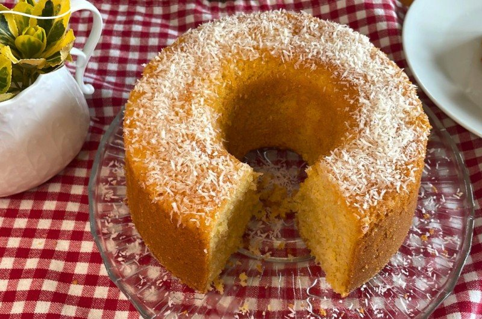

Doces · Tortas e bolos
Bolo de fubá e coco

Ingredientes
- 1 xícara de açúcar
- ½ xícara de manteiga ou margarina
- 3 gemas
- 1 vidro pequeno (200 ml) de leite de coco
- 1 xícara de leite
- 1 xícara de fubá
- 1 pacote pequeno (50 g) de coco ralado
- ½ xícara de farinha de trigo
- 1 colher (sopa) de fermento em pó
- 3 claras batidas em ponto de neve bem firme
- Manteiga para untar
- 2 colheres (sopa) de açúcar
Modo de preparo
- Preaqueça o forno em temperatura média (200 °C). Numa batedeira em velocidade média, bata o açúcar e a manteiga até obter um creme esbranquiçado e fofo.
- Junte as gemas, uma a uma. Em seguida, vá adicionando metade do leite de coco e todo o leite. Continue batendo.
- Desligue a batedeira e acrescente os ingredientes secos: o fubá, o coco ralado, a farinha de trigo e o fermento em pó. Misture bem.
- Por último, acrescente delicadamente as claras em neve.
- Coloque a massa numa assadeira de 20 x 30 cm untada com manteiga.
- Asse no forno preaquecido por 20 minutos. Reduza a temperatura para baixa (150 °C) e asse por mais 5 minutos. Retire do forno.
- Misture o restante do leite de coco com o açúcar e despeje sobre o bolo ainda quente. Deixe esfriar completamente, corte em quadrados e congele.
Observação
Desenforme o bolo e deixe esfriar em cima de uma grade: isso evita a umidade criada no contato do bolo com a fôrma. Congelamento: coloque os quadradinhos de bolo numa assadeira, cubra com plástico e leve ao freezer até congelarem; passe-os para um saco plástico, retire o ar e vede bem; etiquete e congele. Descongelamento: em temperatura ambiente por cerca de 1 hora.